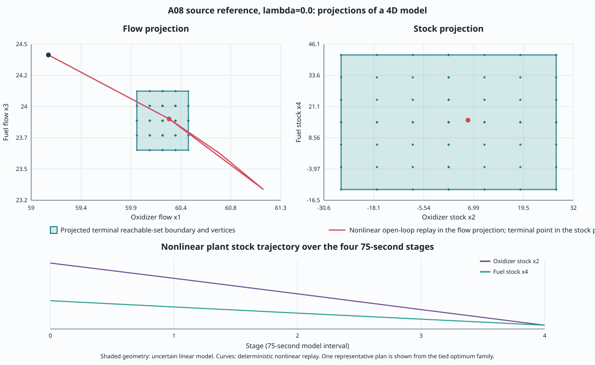

B09 A08 fuel source-reference
Reference case, not a historical reproduction. Source hashes identify local MATLAB files; publication row mapping is unresolved. The four-state model uses open-loop finite-action minimax. The paper's historical source and results are not modified.
The plots project the terminal reachable set from four dimensions to flows (x1,x3) and stocks (x2,x4). The red trace is a deterministic nonlinear replay of one representative plan from the tied minimizing family. The shaded boundary comes from the uncertain linear model; the two are distinct evidence.
| lambda | Feasible plans | Minimizers | Worst-case objective | Median (ms) | Range (ms) |
|---|---|---|---|---|---|
| 0.0 | 76 / 6,561 | 4 | 50.179930945 | 242.215 | 237.100–254.395 |
| 1.0 | 76 / 6,561 | 6 | 115.794115476 | 242.795 | 235.211–247.650 |

Seven measured Release calls per objective after one excluded warmup. Each public interval includes request construction and solution. Independent direct enumeration agrees on the value and all minimizing action sequences. No speedup or historical-row claim is made.
Assumptions and reproduction · Geometry and terminal results · Raw timing rows · Independent oracle · Provenance · Checksums